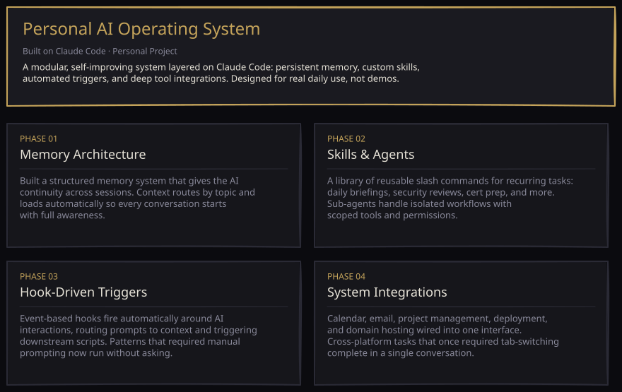

Cybersecurity · Applied AI
I'm a cybersecurity student at Kennesaw State University, completing my B.S. and M.S. in cybersecurity concurrently through the Double Owl accelerated pathway and already enrolled in graduate-level coursework. My focus is the intersection of cloud security and applied AI, and how the two can reinforce each other. I'm CompTIA A+, Security+, and Microsoft AZ-900 certified, currently working toward AZ-104.
Outside of coursework I serve as President of Theta Chi, the largest IFC chapter on campus, leading its strategic direction and daily operations and representing it to university leadership and the national organization. My goal is simple: bridge the gap between efficient AI systems and secure infrastructure.
Academic — Bachelor's Level
Built a weighted asset inventory and decision matrix to evaluate system criticality across a simulated multi-asset environment. Quantified risk using likelihood × impact scoring and developed cost-benefit mitigation recommendations aligned with industry standards.
A full-scope risk assessment conducted for a simulated small business running on legacy infrastructure with no existing security policies, trained IT staff, or incident response planning. The goal was to move from a completely unstructured environment to a prioritized, defensible security posture.
Phase 01
Asset Inventory
Catalogued each asset in the environment, documenting data classification, ownership, usage patterns, and recovery requirements. Established a clear baseline of what existed, what it handled, and what depended on it.
Phase 02
Asset Valuation Matrix
Built a weighted scoring model to rank assets by business importance. Criteria were selected and justified to reflect the organization's profile as a small consumer brand, balancing operational continuity, revenue impact, legal exposure, and reputational risk.
Phase 03
Risk Determination
Applied a likelihood-impact framework to score each asset's exposure. Identified environment-wide weaknesses including legacy software, lack of network segmentation, no multi-factor authentication, and no employee security training.
Phase 04
Risk Response
Developed per-asset mitigation recommendations scaled to a realistic small business budget. Proposals covered infrastructure modernization, access control improvements, network segmentation, backup hardening, and a structured employee training program.
Academic — Master's Level
Conducted asset-threat-vulnerability assessments using Clearwater IRM|Pro, producing residual risk scores to inform control selection across a simulated enterprise environment. Applied NIST risk assessment methodology to quantify inherent vs. residual risk and develop prioritized mitigation plans with documented feasibility and effectiveness ratings.
Personal Project
A personal AI operating system built on top of Claude Code: a layered system of agents, skills, workflows, and MCP integrations, backed by a persistent memory layer that gets smarter with use. Engineered for real productivity over demos, with automated triggers handling everything from a daily email and calendar brief to recurring scheduled tasks woven into daily life.

Personal Project
A local voice-dictation tool for Windows that I designed and built end to end. The point wasn't the app itself, it was the engineering: chaining an on-device speech model into a language-model cleanup stage, wrapping it in a self-correcting learning loop, and solving the systems problems underneath, from real-time concurrency to safe text injection into any application without ever corrupting the clipboard.
An end-to-end audio-to-text system I architected and implemented myself, built to prove out a hard idea: a fully local dictation pipeline that gets better the more you use it. Every design decision favored privacy, responsiveness, and self-improvement over the convenience of an off-the-shelf cloud service.
Phase 01
Pipeline Architecture
Composed several independent stages, from capture to on-device transcription to language-model cleanup to injection, into one real-time system. I made deliberate speed-versus-accuracy tradeoffs at each stage and chose local models so nothing ever leaves the machine.
Phase 02
A Self-Correcting Learning Loop
The hardest and most original part. I designed the mechanism that lets the tool learn from its own mistakes: it detects when I fix a word, learns the correction automatically, and feeds that knowledge back into future transcriptions so accuracy on my own vocabulary compounds over time.
Phase 03
Systems Engineering
Solved the low-level problems that make a tool like this usable in practice. A single-writer concurrency model keeps the learning data consistent across background threads, focus-aware injection behaves correctly when you switch windows mid-sentence, and full clipboard preservation guarantees it never overwrites what you had copied.
Phase 04
AI-Assisted Development Workflow
Directed the build through an agentic workflow, with an implementation agent writing each component and an independent reviewer agent auditing it against the plan. The loop caught real defects, including race conditions and data-integrity bugs, before they ever shipped. The skill on display is orchestrating AI as an engineering multiplier, not just generating code.
Personal Project
A security proxy that inspects every prompt before it reaches Anthropic's Claude API, built to solve a problem enterprises don't have a good answer to yet: employees can paste secrets and sensitive personal data into an AI chat tool with nobody watching and no record it happened. Dangerous content gets blocked outright. Sensitive personal data gets automatically redacted while the rest of the request still goes through. Every decision is logged for audit, without ever storing the sensitive text it caught.
A reverse proxy I designed and built end to end, sitting directly in the request path between a client application and Anthropic's Claude API. Enterprises have no reliable way to stop sensitive data from reaching an AI model, or to prove what was sent, and this closes that gap automatically rather than relying on policy and hope.
Phase 01
The Problem
Every chatbot built on top of an LLM inherits the same blind spot: nothing stops an employee from pasting a password, a customer's Social Security number, or a signing key straight into a prompt, and nothing records that it happened. Data-loss prevention for the AI era has to happen in the request path itself, before the API ever sees it.
Phase 02
Detection Engineering
Built a hybrid detection layer: hand-written pattern matching for known credential formats, a randomness-based fallback that catches secrets no pattern recognizes, and validated checks for personal data like Social Security numbers and card numbers, with an optional named-entity layer for names and locations regex alone can't see.
Phase 03
Policy & Governance
Every finding routes through a configurable policy engine: block outright, redact and continue, or allow, all defined in a single governance file rather than buried in code. Sensitive requests can even route to a different model automatically. Every decision writes to an audit trail recording what happened and why, never the sensitive text itself.
Phase 04
Proving It Works
Validated the whole pipeline against a seeded adversarial test set designed to trip it up: real secrets, real personal-data formats, and deliberate traps like normal URLs, code snippets, and invalid-looking data meant to cause false alarms. Then ran it live against Claude with a standard API client to confirm the same behavior holds end to end, not just in a test harness.